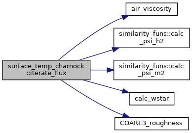

surface_temp_charnock Struct Reference
#include <ERF_MOSTStress.H>
Collaboration diagram for surface_temp_charnock:

Public Member Functions | |
| surface_temp_charnock (amrex::Real zref, amrex::Real Tflux, amrex::Real Qvflux, amrex::Real cnk_a, bool cnk_visc, bool cons_qflux) | |
| AMREX_GPU_DEVICE AMREX_FORCE_INLINE void | iterate_flux (const int &i, const int &j, const int &k, const int &max_iters, const amrex::Array4< amrex::Real > &z0_arr, const amrex::Array4< const amrex::Real > &umm_arr, const amrex::Array4< const amrex::Real > &tm_arr, const amrex::Array4< const amrex::Real > &tvm_arr, const amrex::Array4< const amrex::Real > &qvm_arr, const amrex::Array4< amrex::Real > &u_star_arr, const amrex::Array4< amrex::Real > &w_star_arr, const amrex::Array4< amrex::Real > &t_star_arr, const amrex::Array4< amrex::Real > &q_star_arr, const amrex::Array4< amrex::Real > &t_surf_arr, const amrex::Array4< amrex::Real > &q_surf_arr, const amrex::Array4< amrex::Real > &olen_arr, const amrex::Array4< amrex::Real > &pblh_arr, const amrex::Array4< amrex::Real > &, const amrex::Array4< amrex::Real > &, const amrex::Array4< amrex::Real > &) const |
Private Attributes | |
| most_data | mdata |
| bool | spec_qflux |
| similarity_funs | sfuns |
| const amrex::Real | tol = 1.0e-5 |
| const amrex::Real | WSMIN = 0.1 |
Detailed Description
Surface temperature with charnock roughness
Constructor & Destructor Documentation
◆ surface_temp_charnock()
|
inline |
amrex::Real Cnk_a
Standard Charnock constant https://doi.org/10.1175/JAMC-D-17-0137.1.
Definition: ERF_MOSTStress.H:22
Member Function Documentation
◆ iterate_flux()
|
inline |
AMREX_GPU_DEVICE AMREX_FORCE_INLINE amrex::Real COARE3_roughness(amrex::Real zref, amrex::Real umm, amrex::Real ustar)
Definition: ERF_MOSTRoughness.H:9
AMREX_GPU_DEVICE AMREX_FORCE_INLINE amrex::Real air_viscosity(amrex::Real T_degK)
Definition: ERF_MOSTStress.H:80
AMREX_GPU_DEVICE AMREX_FORCE_INLINE amrex::Real calc_wstar(const amrex::Real &ust, const amrex::Real &tst, const amrex::Real &qst, const amrex::Real &pblh, const amrex::Real &th, const amrex::Real &thv, const amrex::Real &qv=0.0)
Definition: ERF_Wstar.H:13
amrex::Real gravity
Acceleration due to gravity (m/s^2)
Definition: ERF_MOSTStress.H:18
AMREX_GPU_HOST_DEVICE AMREX_FORCE_INLINE amrex::Real calc_psi_m(amrex::Real zeta) const
Definition: ERF_MOSTStress.H:41
AMREX_GPU_HOST_DEVICE AMREX_FORCE_INLINE amrex::Real calc_psi_h(amrex::Real zeta) const
Definition: ERF_MOSTStress.H:55
Here is the call graph for this function:

Member Data Documentation
◆ mdata
|
private |
Referenced by iterate_flux(), and surface_temp_charnock().
◆ sfuns
|
private |
Referenced by iterate_flux().
◆ spec_qflux
|
private |
Referenced by iterate_flux(), and surface_temp_charnock().
◆ tol
|
private |
Referenced by iterate_flux().
◆ WSMIN
|
private |
Referenced by iterate_flux().
The documentation for this struct was generated from the following file:
- Source/BoundaryConditions/ERF_MOSTStress.H